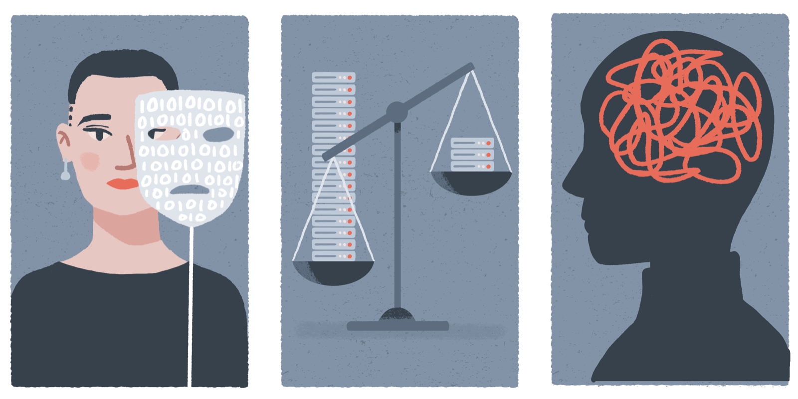

Understanding Bias¶

Before we start exploring the project lifecycle and its associated activities there is a final topic that we need to explore. You will likely have some prior familiarity of the term 'bias', but your understanding of the concept may emphasise specific properties that reflect a specific focus of your research background. This section will present three common ways that 'bias' can be understood as it applies to and affects the research and innovation lifecycle. The three perspectives that we will look at are: social, statistical, and cognitive bias.
Social Bias¶
Outside of research and development communities, the term 'bias' is often associated with some form of prejudice or discrimination. For example, an inclination or disposition to treat an individual or organisation in a way that is considered to be unfair. This understanding of bias is necessary to draw attention to pre-existing or historical patterns of discrimination and social injustice that can be perpetuated, reinforced, or exacerbated through the development and deployment of data-driven technologies. There are numerous examples that illustrate this point.
=== "Amazon's recruitment tool"
This [algorithmic system]((https://www.reuters.com/article/us-amazon-com-jobs-automation-insight-idUSKCN1MK08G)) learned to perpetuate a bias to prefer male candidates to female candidates because this reflected past hiring decisions.
=== "Predictive policing"
Predictive policing techniques are [increasingly being developed and deployed](https://www.technologyreview.com/2020/07/17/1005396/predictive-policing-algorithms-racist-dismantled-machine-learning-bias-criminal-justice/), making use of geospatial data to try to learn associations between places, events, and historical crime rates. The attempt to predict where and when crimes are more likely to happen can create a positive feedback loop, which results in over-policing that may exacerbate tensions between communities and police.
=== "Clinical decision support systems"
Clinical decision support systems can contribute to existing forms of [racial bias in access to healthcare](https://www.nature.com/articles/d41586-019-03228-6).
A study conducted in the US found that an algorithm that used health costs as a proxy for health needs was ''less likely to refer black people than white people who were equally sick to programmes that aim to improve care for patients with complex medical needs''.[@obermeyer2019]
A commonly heard response to such examples is the claim that the underlying problem is that the training data used to develop the algorithms or models were insufficiently representative. In other words,''it was the data that were biased''. The assumption behind this claim is that better data collection would solve the problem. Unfortunately, at best this response is only partially true, but at worst it belies a commitment to a form of 'technological solutionism'1 that often ignores how technology affects social practices and norms.
It is important to remember that most decisions that drive the project lifecycle are made by the project team. A choice to design a study in a particular way, or to deploy a system in a context that is characterised by patterns of historical discrimination, cannot simply be blamed on poor data.
Statistical Bias¶
If you are a data scientist, or use techniques from data science in your research or development, then it is likely that your understanding of bias is influenced by statistical concepts.
Jeff Aronson explores the etymology of the term 'bias' in a series of interesting blog articles, which emphasise the statistical understanding of bias.[@aronson2018] He begins by tracing it back to the game of bowls, where the curved trajectory of the bowl as it ran along the green reflected the asymmetric shape of the bowl (i.e., its bias). However, according to Aronson, the term was not used in statistics until around the start of the 20th Century where it was used to refer to a systematic deviation from an expected statistical result that arises due to the influence of some additional factor. This understanding is common in observational studies where bias can arise in the process of sampling or measurement.
On the basis of his historical review, Aronson identifies six features of definitions of bias that adopt a statistical perspective:
- Systematicity: bias arises from a systematic process, rather than a random or chance process.
- Truth: a realist assumption that the deviation is from a true state of the world
- Error: the bias reflects an error, perhaps due to sampling or measurement
- Deviation (or Distortion): a quantity in which the observed result is taken to differ from the actual result were there no bias.
- Affected elements: the study elements that may be affected by the bias include the conception, design, and conduct of the study, as well as the collection, analysis, interpretation, and representation of the data
- Direction: the deviation is directional, as it can be caused by both an under- or over-estimation
Some of these features are specific to a statistical framing of 'bias', but some also apply to the other two perspectives For instance, 'systematicity' is arguably a necessary property for social biases (i.e., a bias that systematically leads to discriminatory outcomes). And, 'error' is sometimes a property of our next perspective: cognitive biases.
Cognitive Bias¶
Our modern understanding of cognitive biases has been most heavily influenced by research conducted by Daniel Kahneman and Amos Tversky. A lot of their work exposed a wide variety of psychological vulnerabilities, which impact our judgement and decision-making capabilities. In short, their experiments showed how individuals rely on an assortment of heuristics or biases, which speed up judgement and decision-making but also lead us astray.
For example, consider the following example.
The Linda Problem
Linda is 31 years old, single, outspoken, and very bright. She majored in philosophy. As a student, she was deeply concerned with issues of discrimination and social justice, and also participated in anti-nuclear demonstrations.
Which is more probable?
1) Linda is a bank teller. 2) 2) Linda is a bank teller and is active in the feminist movement.
Try to answer this question yourself, before you reveal the answer.
??? note "Reveal"
The correct answer is (1). Did you get it right?
If you got it wrong, you have just committed what is known as the 'conjunction fallacy'. But don't worry you're in very good company!
When Tvserky and Kahneman posed this question to a group of 88 undergraduate students, only $15%$ got the correct answer {cite}`tversky1983`.
The reason it is (1) is because the probability of two events occurring *in conjunction*, such as Linda being both a 'bank teller' and 'active in the feminist movement' must be less than or equal to the probability of either event occurring on its own.
Formally, for two events $A$ and $B$:
$Pr(A \wedge B) ≤ Pr(A)$ and $Pr(A \wedge B) ≤ Pr(B)$
Or, to put it more simply, someone cannot belong to the set of $feminist bank tellers$ without also belonging to the set of $bank tellers$ 👇

Tversky and Kahneman attributed this systematic error to what is known as the *representativeness heuristic*.
In short, people don't think about the conjunction of events or consider probability theory when formulating an answer.
Instead, their choice is based on which of the two options is *most representative* of the description of Linda.
That is, they employ a mental shortcut (or, a heuristic) that in some instances lead to the right answer—hence, their efficiency. However, in in other cases their use lead to mistakes or errors in judgement.
A critical perspective on the view of judgement and decision-making put forward by Kahneman and Tversky would view it as an attempt to catalogue a variety of cognitive failures or irrationalities that stem from an individual’s inability to perform rational calculations. However, those who adopt a view known as 'ecological rationality' argue that such a perspective judges human agents against a normative standard of rationality that is unsuitable for situated agents whose choice behaviour is constrained by myriad cognitive and environmental factors (e.g. temporal constraints that force decisions, limited information). This alternative account, made famous by Herbert Simon, and later developed by Gerd Gigerenzer reframes a lot of human judgement and decision-making as underpinned by “fast and frugal” heuristics, which are highly adaptive and support decision-making in complex and uncertain environments. It's not necessary to delve into this debate for the present purposes, but it is an interesting tangent for those interested in exploring how the choice to present statistical information in different ways (e.g., as probabilities versus frequencies) can affect comprehension and understanding.2
When carrying out research and innovation in data science and AI, cognitive biases can impact the processes and outcome of the project lifecycle in myriad ways. There is, after all, a large list of cognitive biases to consider. No one is expected to memorise this list as a prerequisite for responsible action. However, there are some key cognitive biases that it can be helpful to consider.
The next activity will explore a small handful of these biases, but we will look at others in more detail when we starting exploring the different stages of the project lifecycle in the next chapter. This way, we can anchor our understanding of biases—social, statistical, and cognitive—in the parts of the project lifecycle where we can hopefully mitigate their (potentially) negative impact.
-
The term 'technological solutionism' is often used to refer to the belief (or, "faith") that technology can be used to solve a problem that was likely caused by technology in the first place.[@morozov2013] ↩
-
For those who want to reconstruct the debate between Kahneman, Tversky, and Gigerenzer, the following papers can be read in order: (1) Tsversky, (1974)[@tversky1974], (2) Gigerenzer, (1991)[@gigerenzer1991], (3) Kahneman, (1996)[@kahneman1996], (4) Gigerenzer, (1996)[@gigerenzer1996] ↩